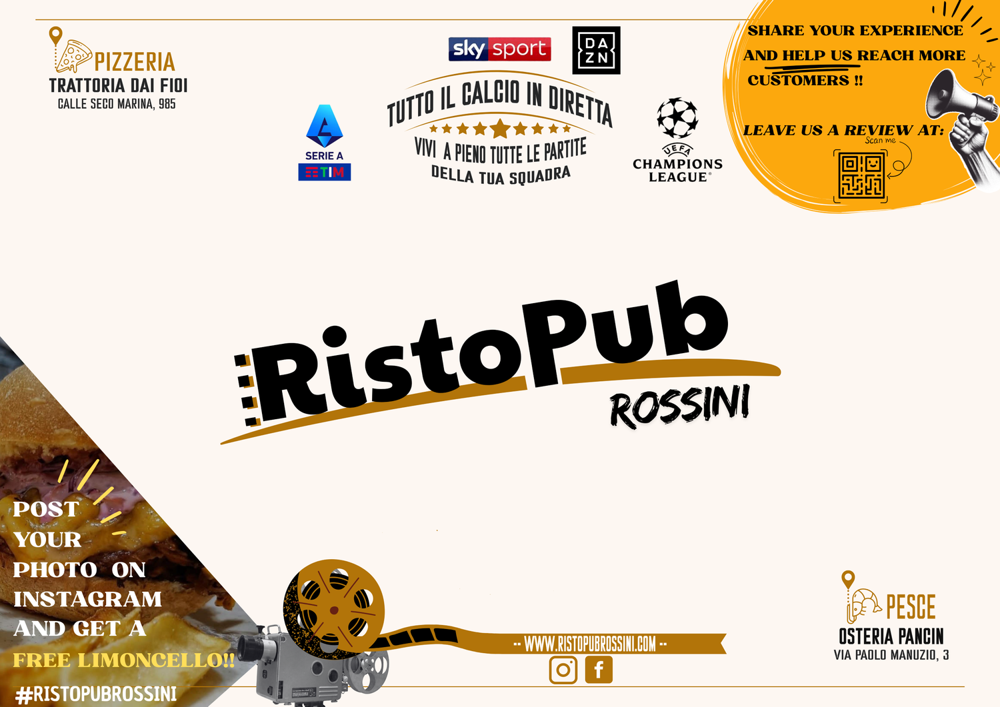
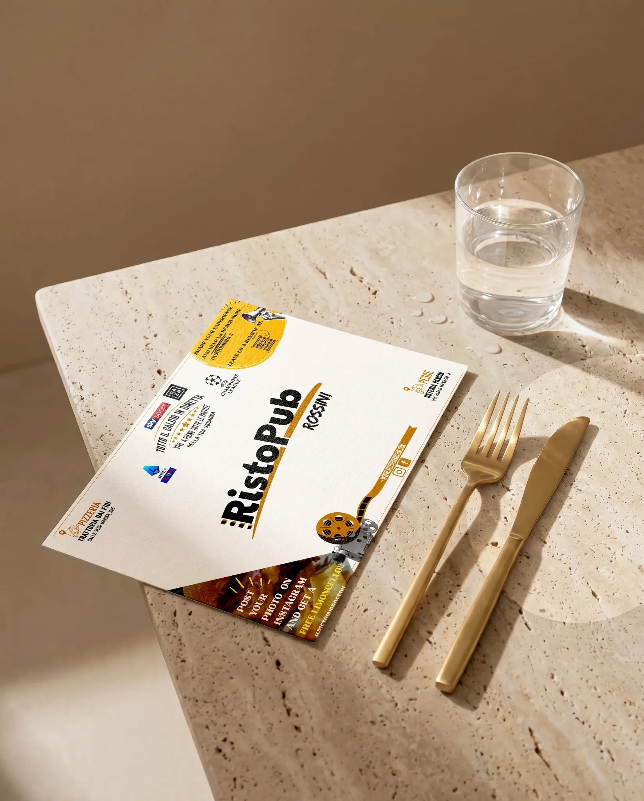

oltre la tovaglietta
Il Contesto & L'Idea
Mentre lavoravo come bartender, ho notato che la proprietà puntava moltissimo sull'ottenimento di recensioni online (con tanto di sistema di incentivi e bonus per lo staff). Ho colto l'occasione per proporre una soluzione di design strategica: sostituire le classiche tovagliette con un layout personalizzato e multifunzionale.

Strategia & Progettazione
Partendo dai requisiti del cliente, ho sviluppato un supporto grafico che concorda nei colori e nello stile con l'identità visiva esistente (sito web e menu), integrando diversi obiettivi di business:
- Generazione di Recensioni & Social Media: Inserimento di una Call-to-Action chiara per le recensioni e di un invito a condividere scatti su Instagram per ampliare la presenza social del locale.
- Cross-Promotion: Spazio dedicato agli indirizzi degli altri locali del gruppo per incentivare la fidelizzazione.
- Visual Marketing & UX: Illustrazione del burger, simbolo del locale — il piatto più richiesto e spesso indicato dai clienti — per offrire un'anteprima visiva immediata, facilitare la scelta al tavolo e velocizzare le ordinazioni.

Il Risultato
Un elemento informativo ma di forte impatto visivo, capace di migliorare l'esperienza del cliente al tavolo, di rendere l'immagine del locale più professionale e di sostenere attivamente gli obiettivi di marketing della proprietà.